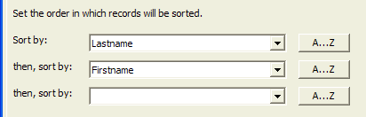

Order Builder
The Order Builder lets you create powerful sort operations by navigating through an easy-to-understand dialog box.
Procedure
Optionally, select a field from the first Sort by list to be the basis of the secondary sort.
Optionally, click A...Z to sort in descending order.
Optionally, select a field from the first then,sort by list to be the basis of the secondary sort.
Optionally, click A...Z to sort in descending order.
Optionally, select a field from the second then,sort by list to be the basis of the tertiary sort.
Optionally, click A...Z to sort in descending order.

Click OK to continue.
Click Cancel to discard your inputs and exit from the Filter Builder.
Click
 to display the Order Expression
dialog box, which shows the Xbasic filter expression you created in the
Order Builder. This is an excellent way to learn
the syntax for creating filter expressions.
to display the Order Expression
dialog box, which shows the Xbasic filter expression you created in the
Order Builder. This is an excellent way to learn
the syntax for creating filter expressions.Click Expression Builder to switch to the <span class=Screen>Expression Builder</span>.